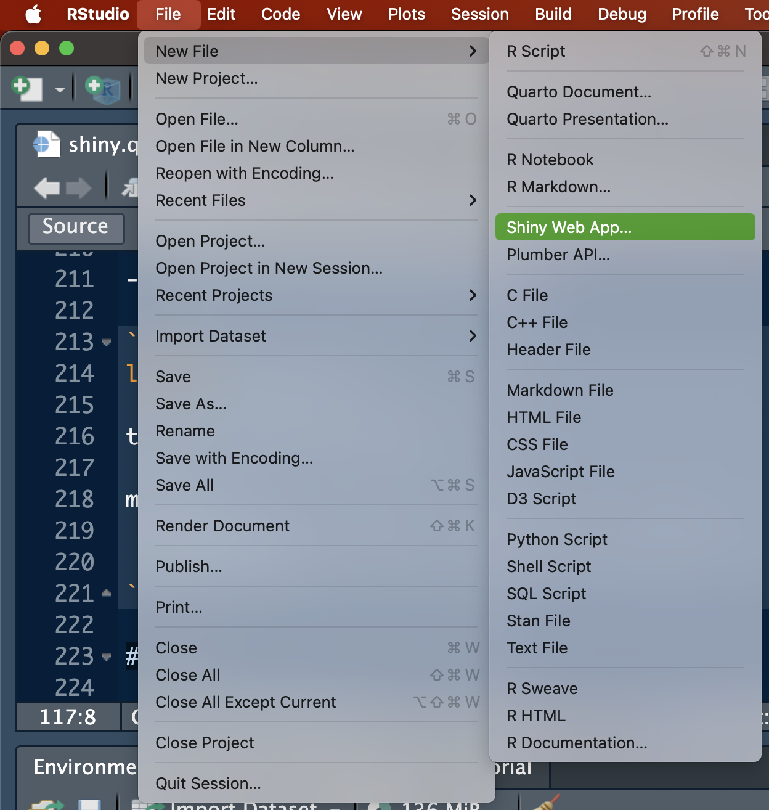
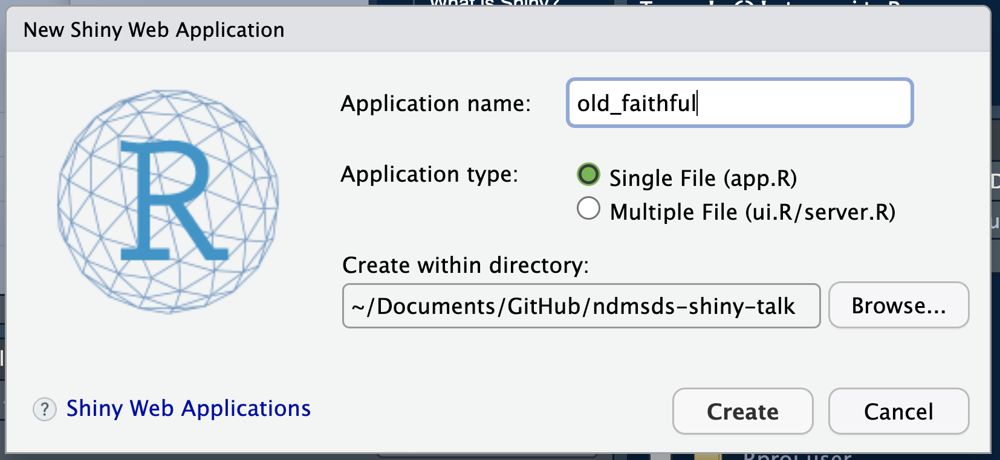

Turning R Code into Interactive Gold!
2024-12-05
install.packages("shiny")
library(shiny) ui <- fluidPage( ... # UI elements go here ) server <- function(input, output) { ... # Server logic goes here } shinyApp(ui, server)
File > New File

Application name:
